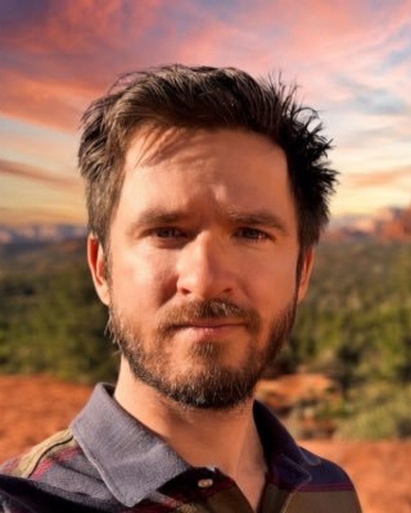

University of Arizona, Tucson, AZ, USA

Objective: To test whether pulsed photobiomodulation (PBM) augments meditative states and their neurophysiological signatures in experienced meditators. Methods: Twenty practitioners (within-subject, single-blind, crossover) completed three sessions: Baseline (meditation only), Sham PBM (wearing the device with no output), and Active PBM delivered with the Vielight Neuro Pro (810 nm; intranasal, cerebellar, and six transcranial emitters pulsed for 33 min in an ascending ladder: 1–1024 Hz, 50% duty cycle). Subjective phenomenology was assessed using the Revised Mystical Experience Questionnaire (MEQ). Resting-state EEG (19 channels, 256 Hz) was recorded 6 min pre- and post-meditation each session. Data underwent standardized preprocessing (artifact repair/ICA, re-referencing, surface Laplacian). Neural correlates were evaluated via 19-channel pre- and post-intervention resting-state EEG, with analyses focusing on canonical frequency band power and the parameterization of the aperiodic (1/f) spectral exponent. Results: Active PBM significantly increased total MEQ scores relative to Sham and Baseline (Estimate = 0.63, p = 0.037), with the largest gains on the Transcendence (p = 0.021) and Ineffability (p = 0.013) subscales. Stratifying by meditation style showed this benefit was carried by Open Monitoring (OM) practitioners (Estimate = 0.85, p = 0.001) rather than Focused Attention (FA) practitioners (Estimate = 0.41, p = 0.26). EEG effects were similarly state-dependent. OM practitioners exhibited right-lateralized broadband excitation - increased Gamma and Beta power with a flattening of the aperiodic exponent at right-frontal (F4) and left-parietal (P3) sites, accompanied by increased signal complexity at right prefrontal electrodes. FA practitioners showed a near-opposite profile: increased low-frequency (Delta/Theta/Alpha) power at midline and left-central sites, a steepened aperiodic exponent, suppressed gamma, and large reductions in time-domain complexity at left-central C3. At the source level, FA practitioners showed reduced Limbic-network beta power under Active stimulation (d = -1.06, p = 0.048). Pooling across practices masked these opposing effects. Conclusions: In experienced meditators, active pulsed PBM deepened mystical experience and reorganized cortical activity, but its effects were gated by the meditative state in which it was delivered - broadband right-hemisphere excitation under Open Monitoring versus low-frequency, complexity-suppressed concentration under Focused Attention. These findings support a state-dependent amplification model in which PBM supplies metabolic resource that the brain applies to whatever cognitive mode is engaged, rather than producing a uniform neural signature. Given the small subgroups, these results are exploratory and warrant preregistered replication.
Brian Lord is a cognitive neuroscientist in Tucson, AZ, studying how the brain can be measured and modulated in real time. He earned his PhD at the University of Arizona, where he is now a postdoctoral researcher, and builds EEG, MRI, and neuromodulation systems that work in the lab, the clinic, and the field. His research centers on neuromodulation (transcranial focused ultrasound and photobiomodulation), real-time brain-state measurement, and applied psychophysiology.